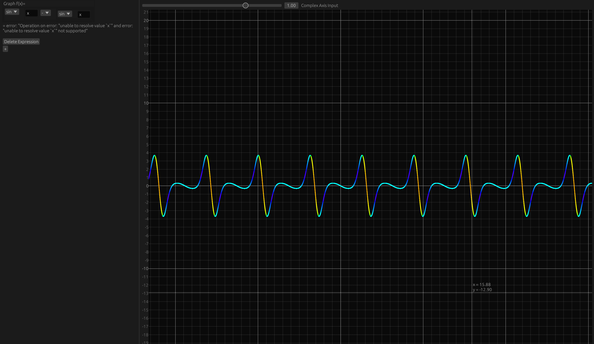

This is a calculator I'm developing as of this moment!
While a calculator like this seems like a very simple project, there is a lot of trickiness with this one:
Right now it's very barebones, with little support for more complex things like vectors,
but there will be more support soon!
A web demo will be available eventually when I figure out how to port this to WASM.
You can view the source code here: https://github.com/akarahdev/comp-rs
Note the source code repository is very barebones as of this moment, I will make it look better soon!